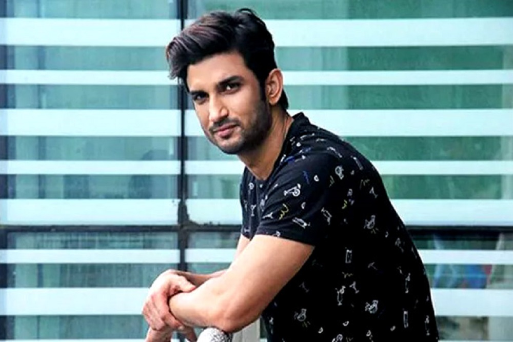

1986 - 2020
"I want to be remembered as someone who was honest and who did his best to do justice to every character I played."
Sushant Singh Rajput was an Indian actor who gained popularity for his work in the Hindi film industry. He was born on January 21, 1986, in Patna, Bihar, India. Rajput had a keen interest in acting and dancing from a young age and participated in various cultural events during his school and college days.
After completing his schooling in Patna, Rajput moved to Delhi to pursue a Bachelor of Engineering degree in Mechanical Engineering from the Delhi Technological University. However, he dropped out in the third year to pursue his passion for acting. Rajput joined Barry John's acting classes and later moved to Mumbai to try his luck in the entertainment industry.
Sushant Singh Rajput's acting career began with television shows. He made his acting debut in 2008 with the television series "Kis Desh Mein Hai Meraa Dil." However, he gained widespread recognition for his role as Manav Deshmukh in the popular TV serial "Pavitra Rishta," which aired from 2009 to 2011. His portrayal of Manav garnered him a massive fan following and established him as a promising actor in the television industry.
In 2013, Sushant Singh Rajput made his transition from television to the big screen with the film "Kai Po Che!" directed by Abhishek Kapoor. The film was a critical and commercial success, and Rajput received positive reviews for his performance as one of the lead characters. He went on to deliver notable performances in films like "Shuddh Desi Romance" (2013), "PK" (2014), "Detective Byomkesh Bakshy!" (2015), and "M.S. Dhoni: The Untold Story" (2016).
"M.S. Dhoni: The Untold Story" was a biographical sports drama in which Rajput portrayed the role of Indian cricketer Mahendra Singh Dhoni. His performance in the film was highly appreciated, and it became one of the highest-grossing Bollywood films of 2016. Rajput's dedication and hard work in preparing for the role earned him widespread acclaim.
Sushant Singh Rajput continued to work in the film industry and appeared in movies like "Raabta" (2017), "Kedarnath" (2018), and "Sonchiriya" (2019). However, it was his final film, "Dil Bechara," released in July 2020, that garnered significant attention. The movie, an adaptation of John Green's novel "The Fault in Our Stars," was highly anticipated by fans. Tragically, Sushant Singh Rajput passed away on June 14, 2020, at his residence in Mumbai, which was initially reported as a suicide.
Sushant Singh Rajput's untimely demise shocked the film industry and his fans. It led to a wave of discussions and debates surrounding mental health, nepotism, and the functioning of the film industry. His death also reignited conversations about the importance of mental health support and the need for a more inclusive and nurturing environment in the entertainment industry.
Sushant Singh Rajput's contributions to the Indian film industry and his promising talent continue to be remembered by his fans and colleagues. His performances showcased his versatility as an actor, and his untimely demise left a void in the hearts of many who admired his work.